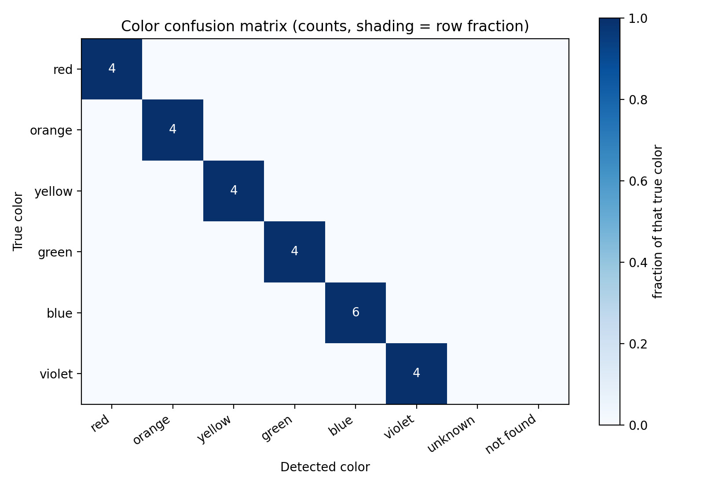
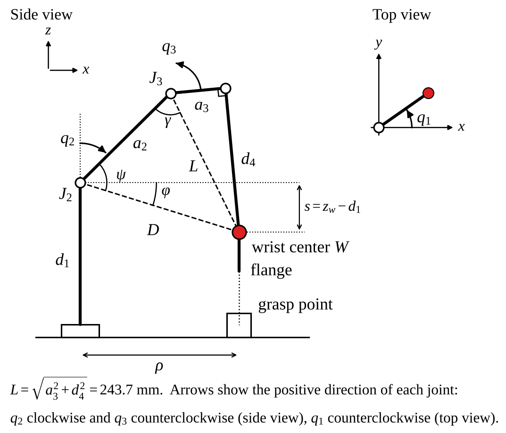
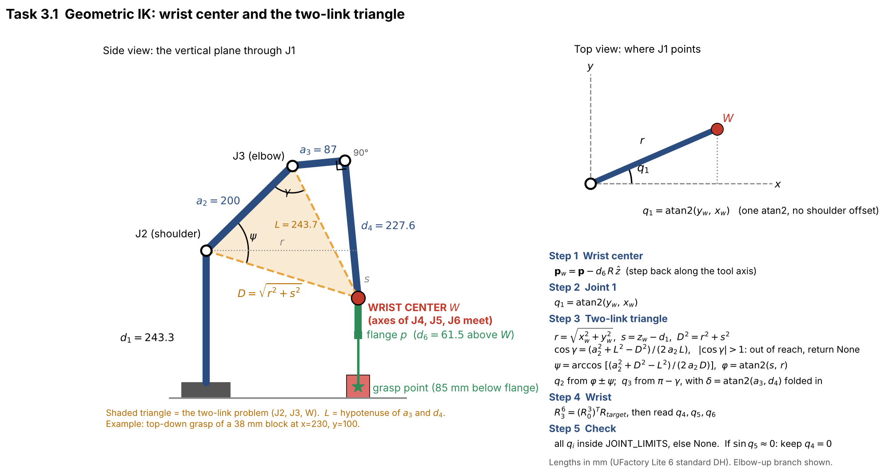
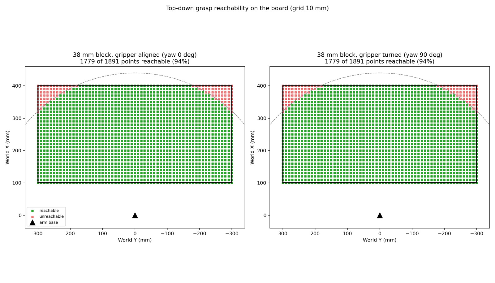
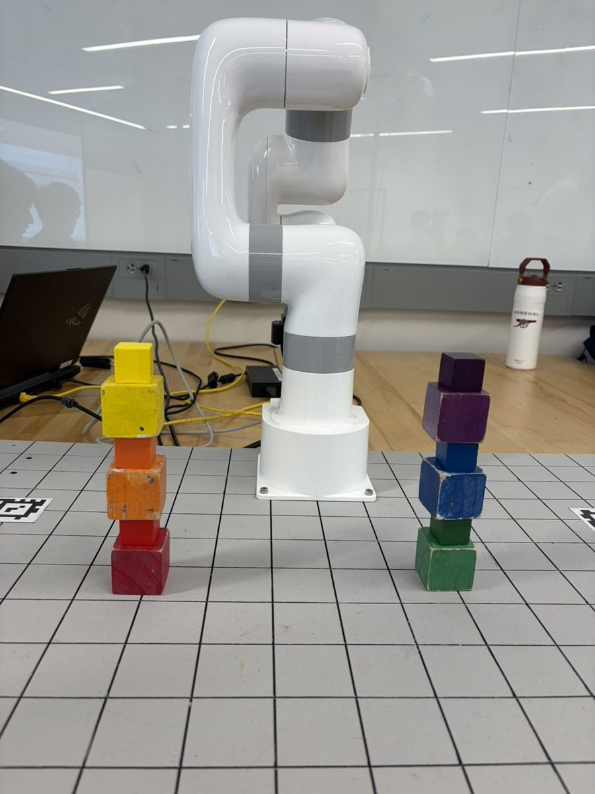

ROB550 Armlab: Vision-Guided Manipulation with a 6-DOF Arm
A UFactory Lite 6 arm and an RGB-D camera that find colored blocks, grasp them and stack them. Team of 4; I was the software developer for 3 of the 4 competition events.
4/4
Competition events completed
15
Block tower, within the 600 s limit
26/26
Colors classified correctly
Event 3: Stack 'em high
Event 4: To the sky
Pipeline
1. CalibrateAprilTags give the camera pose, so pixels map to world mm.
2. DetectRGB-D: position, 6 colors, 2 sizes, stack height.
3. Solve IKClosed-form, wrist-center. All targets solved before the arm moves.
4. ExecutePython state machine: scan, pick, place. One retry, then stop.
Perception


Kinematics


Competition tricks
- Straight-down grasp: hover 70 mm above the block, then descend in 20 mm steps. Joint-space moves arc and clip neighbors.
- Side-place from block 11 up: rotate the gripper 90 degrees at a fixed point, then slide in sideways so the wrist clears the tower.
- No wrist flips: of the IK solutions, pick the one closest to the previous pose.
- No flicker: a block counts only if it appears in 60% of 5 scan frames.
